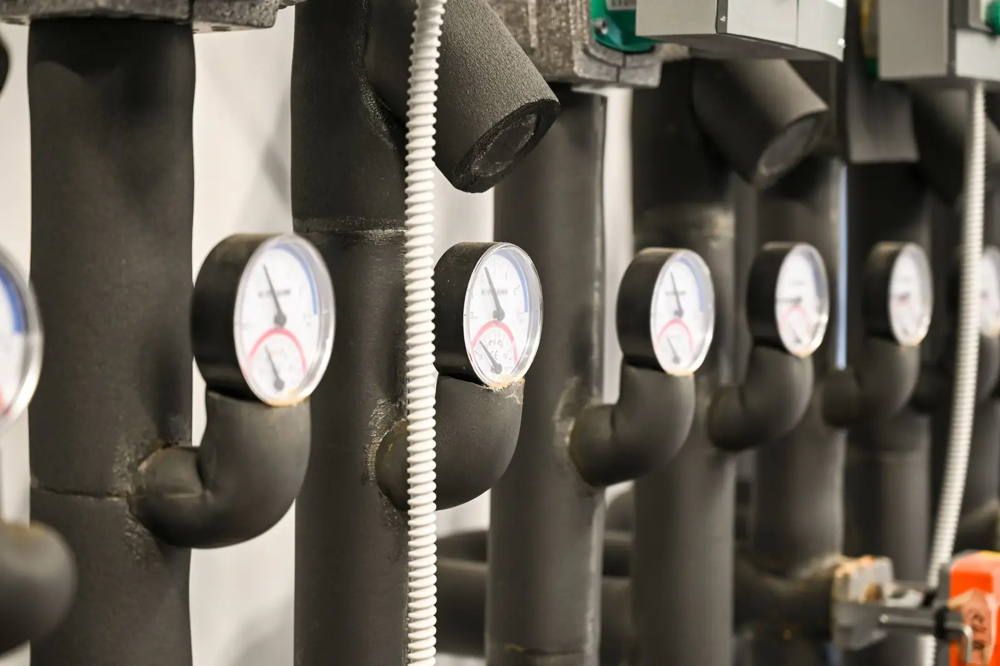
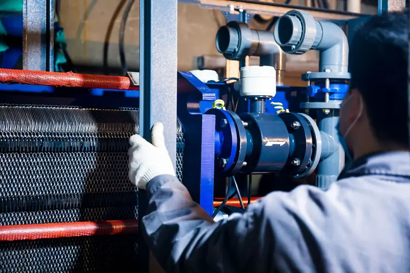
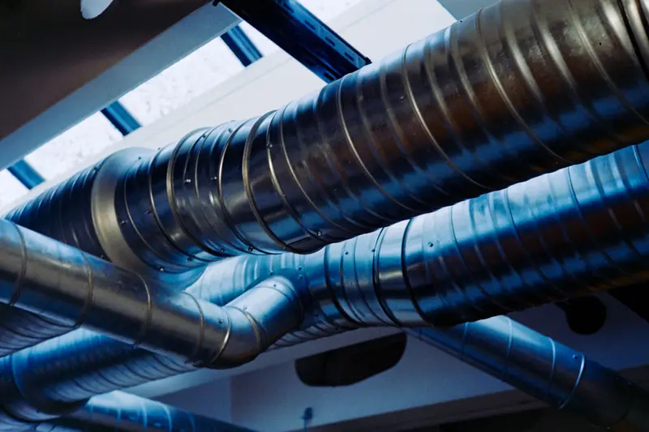
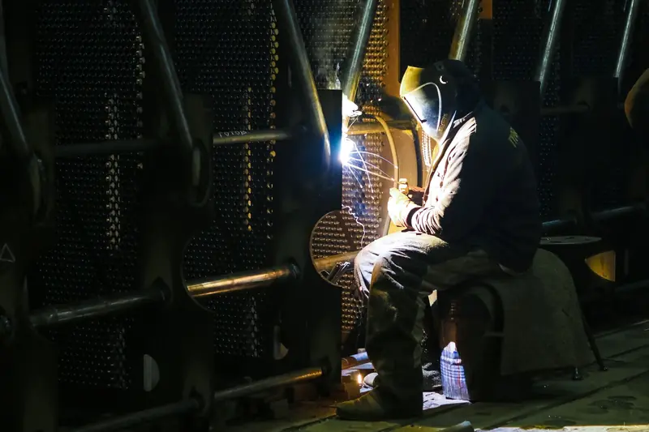
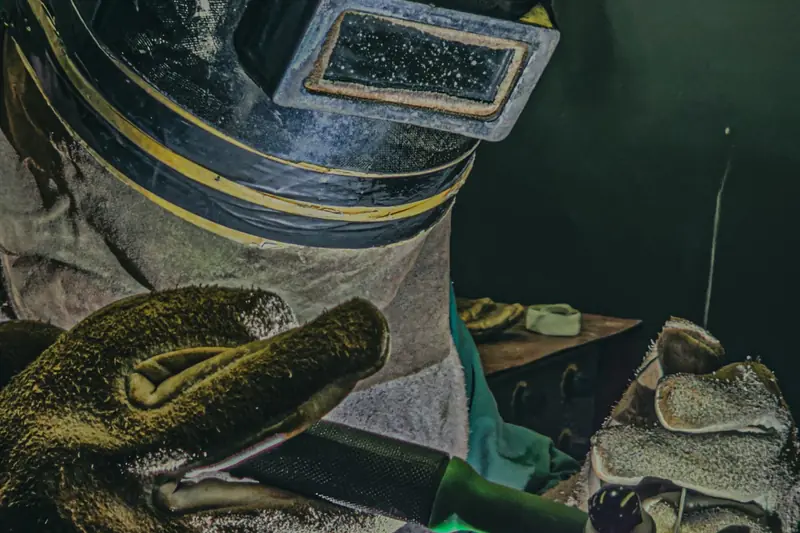

Eskişehir · 2012'den bu yana
Endüstriyel Isıtma Sistemlerinde Güvenilir Çözüm Ortağınız
3A Enerji Sistemleri olarak endüstriyel tesislerin ısıtma, iklimlendirme ve enerji altyapısı ihtiyaçlarına yönelik uygulamalar gerçekleştiriyoruz. Doğalgazlı radyant ısıtma, merkezi ısıtma sistemleri ve mekanik tesisat çözümlerimizi kaynaklı imalat ve montaj kabiliyetimizle destekliyoruz.
Isıtma ve enerji çözümlerimiz
Tesisinizin ısı ihtiyacına uçtan uca uygulama
Isının üretildiği kazan dairesinden kullanıldığı üretim alanına kadar sistemin her halkasında çalışıyoruz.

Endüstriyel ısıtma ve soğutma sistemleri
Proses ısıtma ve soğutma devreleri.
- Merkezi kazan sistemleri
- Buhar ve kızgın yağ
- Sıcak su hatları
- Eşanjör ve ceketli tank

Doğalgazlı radyant ısıtma
Yüksek tavanlı fabrika, depo ve atölyeler için.
- Keşif
- Montaj
- Gaz hattı
- Bakım

İklimlendirme ve enerji uygulamaları
Isıtma, soğutma ve havalandırma tesisatı.
- Havalandırma
- Hava kanalı imalatı
- Cihaz montajı
- Enerji verimliliği
Faaliyet alanlarımız
Tesisat ve imalat kabiliyetimiz
Boru, kanal ve taşıyıcı altyapıyı kendi atölyemizde üretiyoruz.

Endüstriyel Tesisat ve Borulama
Proses ve tesisat boruları, çift cidarlı (ceketli) hatlar; atölyede ön imalat, sahada montaj.

Kaynak Teknolojileri ve Özel İmalat
Paslanmaz, alüminyum ve karbon çelikte TIG ve MIG/MAG kaynağı; konstrüksiyon ve ölçüye özel imalat.
Kurumsal deneyim ve teknik kabiliyet
Keşiften devreye almaya, tek ekip
2012 yılında Eskişehir'de kurulan firmamız; fabrika, depo ve işletmelerin ısıtma, soğutma ve iklimlendirme sistemlerini keşiften devreye almaya kadar yürütür. Tesisatın boru, kanal ve taşıyıcı imalatını kendi atölyemizde yaptığımız için iş tek sorumlu altında, planlandığı ölçü ve sürede ilerler.
- Kuruluş
- 2012
- Merkez
- Odunpazarı / Eskişehir
- Uygulama
- Atölye imalatı ve saha montajı
- Hizmet modeli
- Keşif, teklif, uygulama, bakım
01İhtiyaç analizi
Alanın ölçüsü, tavan yüksekliği, proses sıcaklıkları ve kullanım düzeni yerinde incelenir.
02Doğru sistem seçimi
Kazan, radyant ısıtma veya iklimlendirme; ihtiyaca göre boyutlandırılmış, ihtiyaçtan fazlası olmayan çözüm.
03Atölyede ön imalat
Boru, kanal, askı ve taşıyıcılar atölyede hazırlanır; sahadaki çalışma ve duruş süresi kısalır.
04Saha montajı
Montaj, tesisin çalışma düzeni ve planlı duruş takvimi gözetilerek yürütülür.
05Test ve devreye alma
Basınç, sızdırmazlık ve çalışma kontrolleri yapılarak sistem teslim edilir.
06Bakım ve revizyon
Periyodik bakım, brülör kontrolü ve mevcut sistemlerde iyileştirme çalışmaları.
Çalışma süreci
Dört adımda planlı uygulama
Keşif
Tesisi ve ihtiyacı yerinde inceleriz; ön değerlendirme için fotoğraf ve proje de yeterli olabilir.
Teklif ve planlama
Kapsamı, malzemeyi, süreyi ve maliyeti yazılı teklifte netleştiririz.
İmalat ve montaj
Boru, kanal ve taşıyıcıları atölyede hazırlar, sahada kurarız.
Test ve teslim
Basınç ve çalışma testlerinin ardından sistemi devreye alır, bakımını sürdürürüz.
Tamamlanan projeler
Atölyemizden ve sahadan gerçek işler
Bu bölümdeki fotoğrafların tamamı firmamızın kendi iş arşivindendir.
Referanslarımız
Birlikte çalıştığımız firmalar


Teklif talebi ve iletişim
Projenizi birlikte değerlendirelim
Tesisinizin konumu, alanı ve ihtiyacına dair kısa bir bilgi ön değerlendirme için yeterlidir. Satın alma ve ihale süreçleri için yazılı teklif hazırlıyoruz.
Teklif talebi
Bilgileri doldurun; talebiniz hazırlansın, ardından WhatsApp veya e-posta ile tek adımda bize iletin.
Talebiniz hazır
Aşağıdaki özeti WhatsApp veya e-posta ile tek adımda bize iletin. Gönderim yapılmadan talep bize ulaşmaz.
- Telefon0542 309 31 18
- WhatsApp0542 309 31 18
- E-postainfo@3akaynak.com
- Adres75. Yıl Mah. 11282 Sk. H1 Blok No:2B
Sultandere, Odunpazarı / Eskişehir
 Google Haritalar'da aç© OpenStreetMap katkıda bulunanlar
Google Haritalar'da aç© OpenStreetMap katkıda bulunanlarProje, çizim veya tesis fotoğraflarını WhatsApp üzerinden doğrudan iletebilirsiniz.
WhatsApp ile yazın